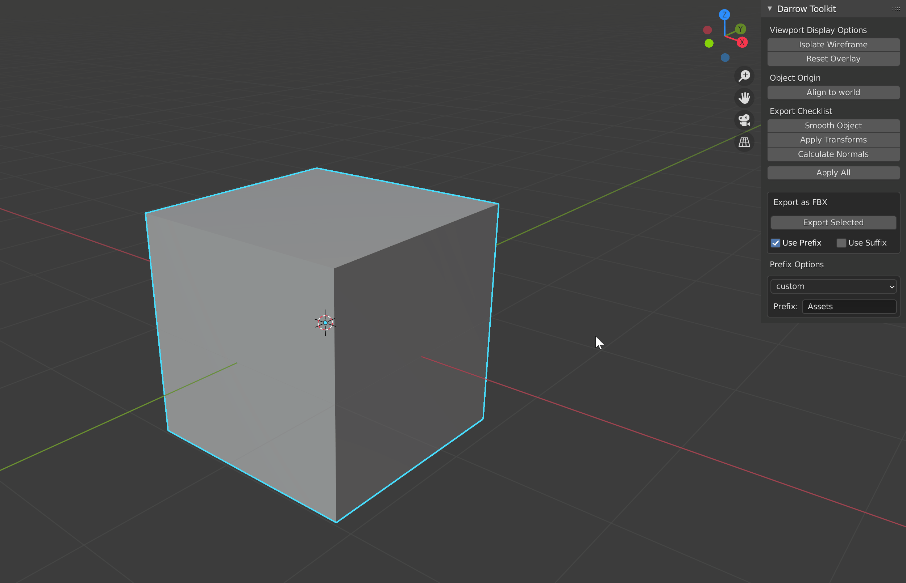

Toolbar Menu
Overview of avaible options.

Custom Prefix
Export with a custom prefix or the .blend* name.

Custom Suffix
Export with a custom counting suffix.

This simple tool allows you to not worry about all those pesky settings, or even typing! All you do is select your mesh, hit "Export Selected", navigate to the file destination in the pop-up, and hit export!
Overview of avaible options.
Export with a custom prefix or the .blend* name.
Export with a custom counting suffix.